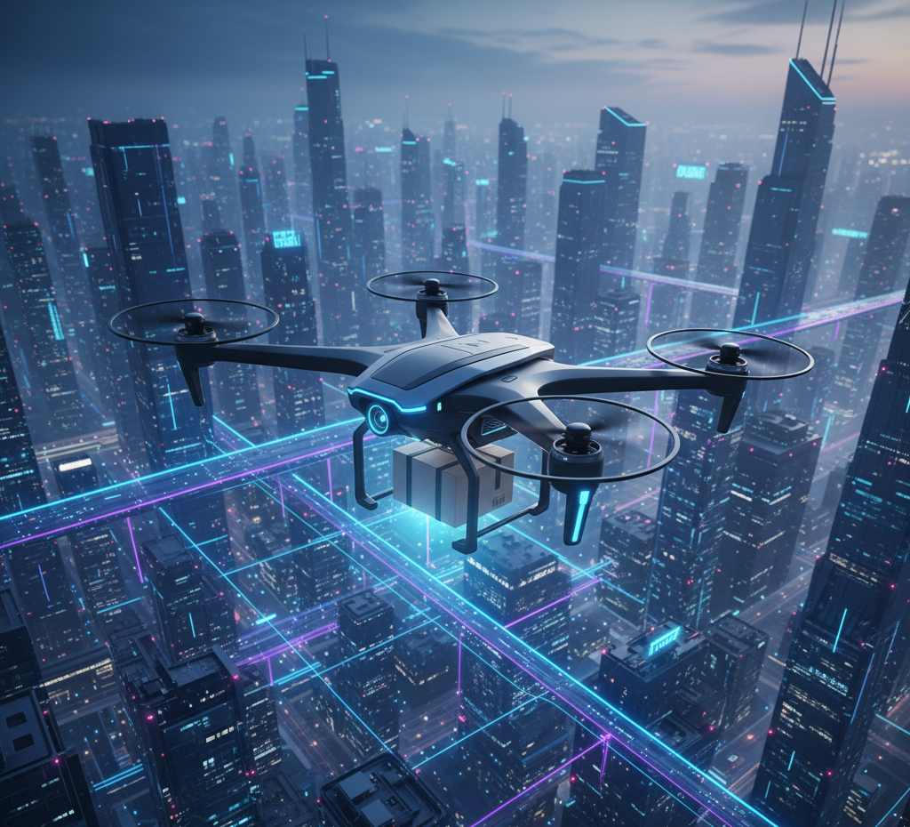
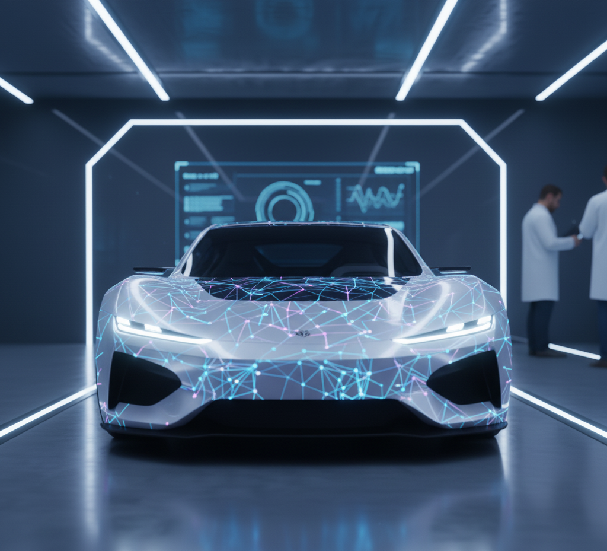

Destaques da semana

Drones na entrega
Entregas rápidas e eficientes com drones autônomos.
 Realidade Mista no Escritório
Óculos RM mudam reuniões e projetos de design.
Realidade Mista no Escritório
Óculos RM mudam reuniões e projetos de design.

Baterias Sólidas: A Revolução
Próxima geração de baterias promete carros elétricos mais
baratos.